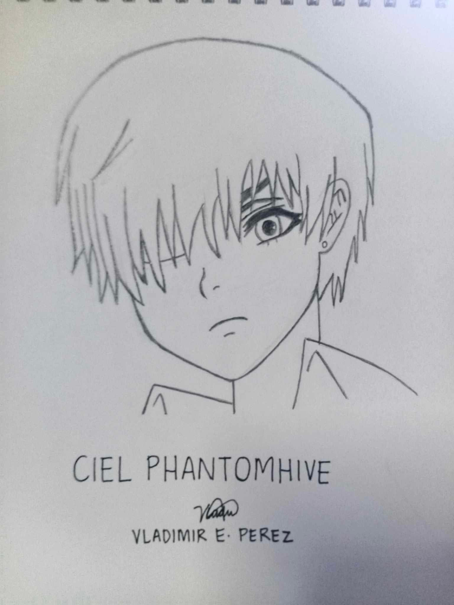
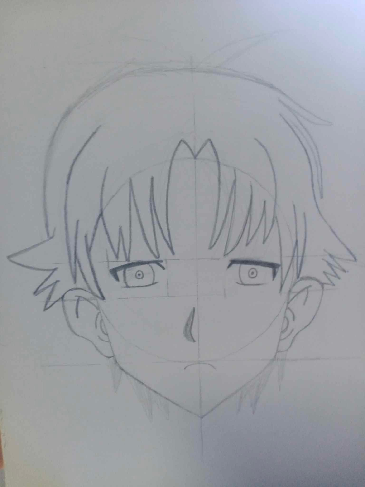
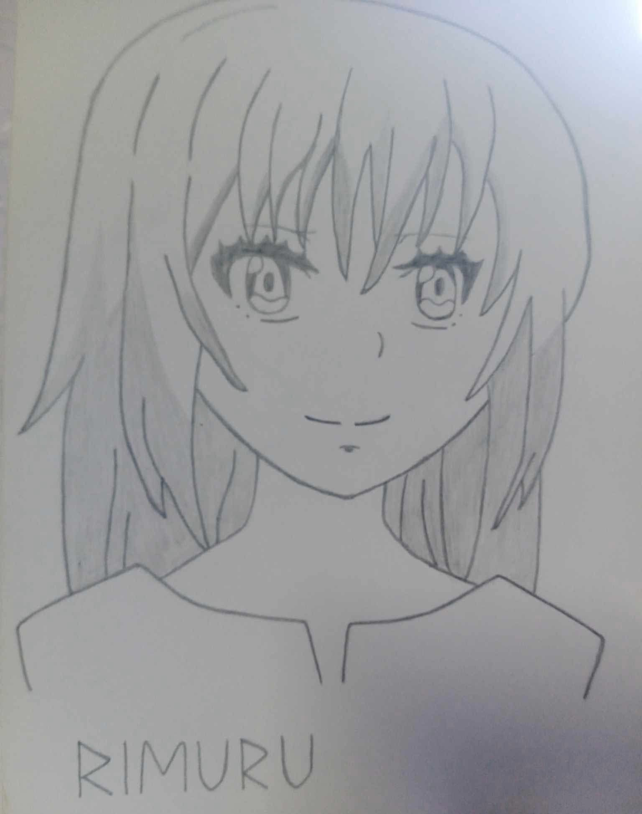
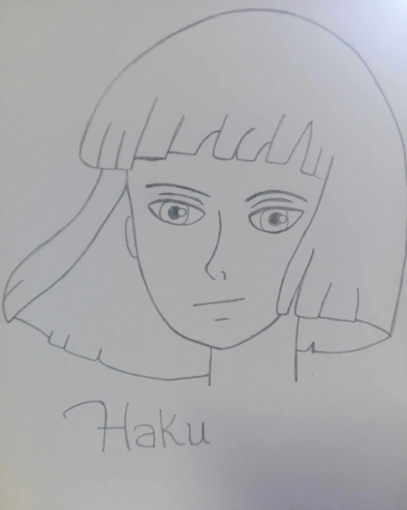

My Traditional Drawing Journey
I recently started to draw in the traditional way since I am currently inspired by cool drawings I see on my social media feed. I am not really an artist, so this is the start of my drawing journey, and I wish to improve in the future.



